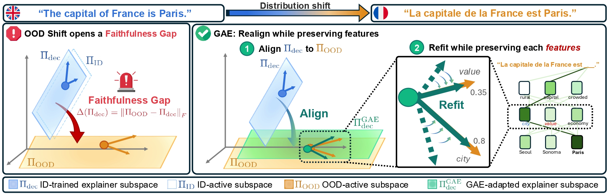
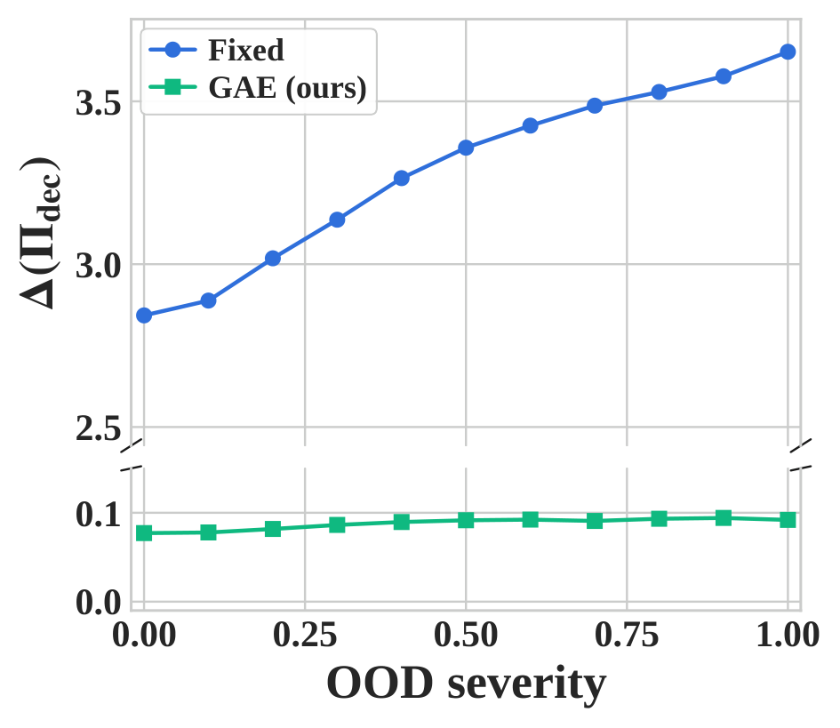
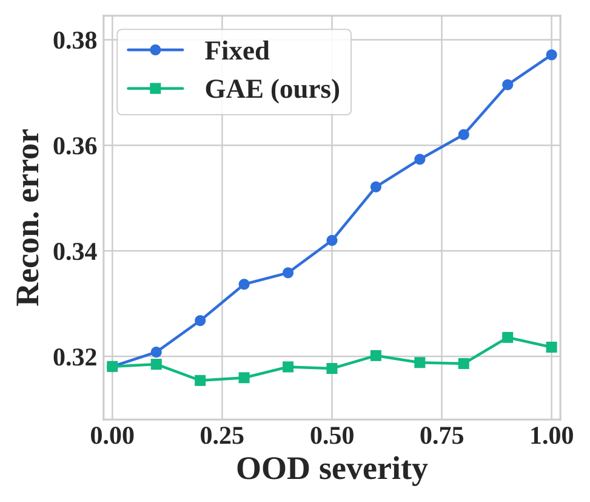
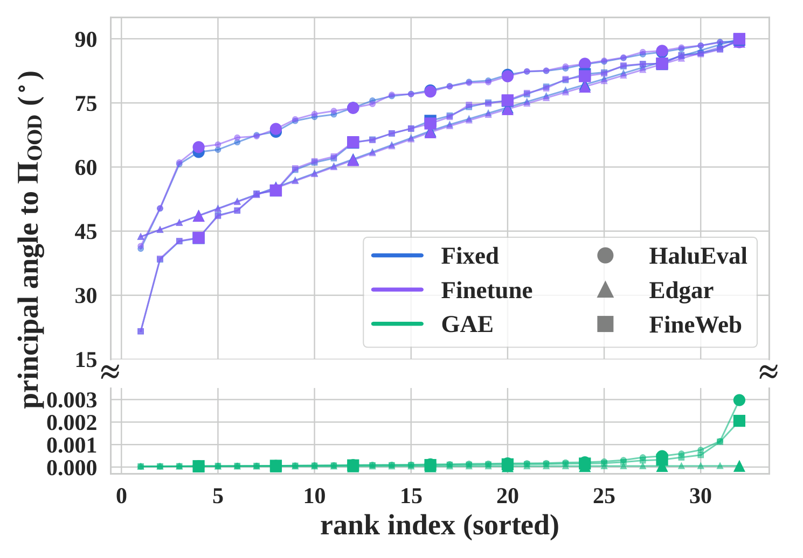
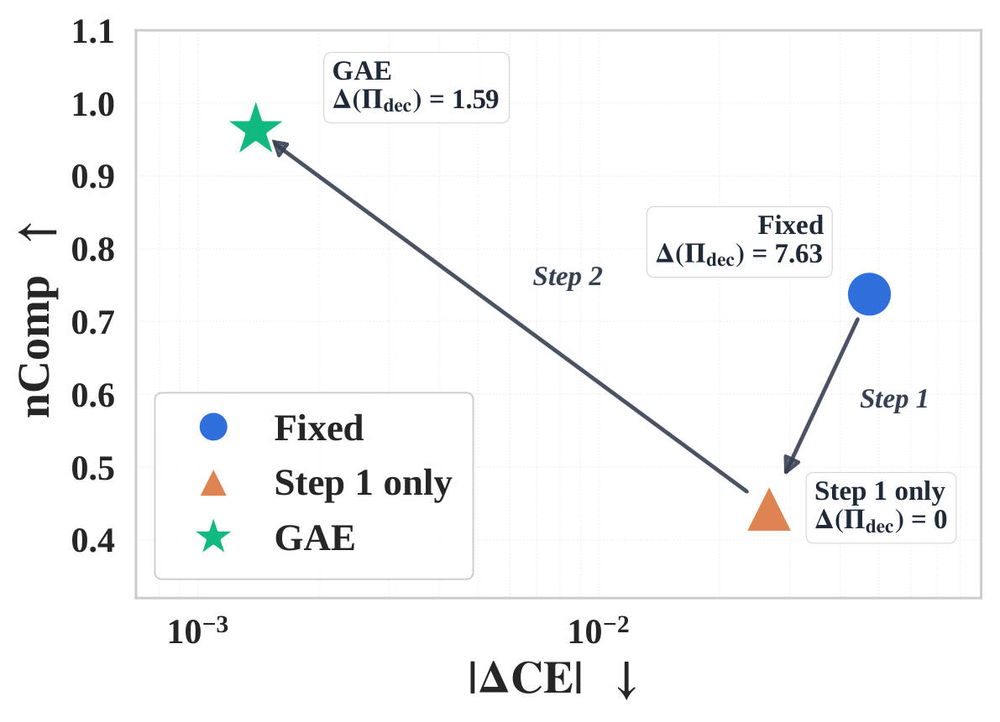

Mechanistic interpretability seeks to explain model behavior by identifying internal structures that are causally responsible for its outputs. Dictionary-based explainers, including sparse autoencoders and transcoders, have become central tools for this purpose, but their faithfulness under out-of-distribution shifts remains underexplored. This work shows that distribution shift can rotate the subspace actively used by a model, causing dictionaries trained on in-distribution activations to become geometrically misaligned with the OOD-active subspace. We formalize this mismatch as a faithfulness gap and introduce the Geometry-Adaptive Explainer (GAE), which realigns the dictionary to the OOD-active subspace while preserving the original feature structure. GAE uses only unlabeled OOD activations and requires no gradient updates, improving OOD faithfulness both theoretically and empirically across multiple models and shift settings.
Method

Faithfulness gap and GAE. Distribution shift rotates the OOD-active subspace away from the ID-trained explainer subspace. GAE closes this gap by aligning the decoder to OOD geometry and refitting feature directions while preserving the original feature structure.
InputID dictionary + unlabeled OOD activations
OutputOOD-faithful adapted dictionary
1
Estimate OOD geometry
Use unlabeled OOD activations to identify the active subspace that matters under the shifted distribution.
Find where OOD activations concentrate.
2
Align the decoder subspace
Rotate the ID decoder toward the OOD-active subspace with an orthogonal Procrustes update.
Move the dictionary into the shifted geometry.
3
Refit feature directions
Keep the encoder fixed and solve a closed-form constrained ridge problem inside the aligned subspace.
Preserve feature identity while improving OOD reconstruction.
Benefit 01No gradients
Benefit 02~2K OOD tokens
Benefit 03Closed-form update
GAE algorithm. Estimate the OOD-active subspace, align the decoder to that geometry, then refit feature directions with the encoder fixed.
1 / 2
Experimental Results
GAE restores faithfulness under temporal, domain, and adversarial distribution shifts without gradient training.
Controlled Validation
Faithfulness remains stable as OOD severity increases.


GAE keeps the faithfulness gap near zero and reconstruction error nearly flat, while the fixed ID explainer degrades as the shift becomes stronger.
Bars show absolute metric values for every baseline in the selected setting. GAE is highlighted in blue; the best method for each metric is marked on the right.
Compute Efficiency
GAE adapts on the fly instead of retraining the explainer.
Method
Tokens
GPT-2
Pythia-1.4B
Finetune
5M
~2 min
~12 min
Retrain / SAEBoost / FaithfulSAE
100M
~39 min
~4 hrs
GAE (ours)
2K
0.5 s
2.9 s
The benchmark advantage is not purchased with extra training: GAE uses only unlabeled OOD activations and a closed-form update.
Mechanism Analysis
Subspace alignment explains the faithfulness gain.


GAE aligns the decoder subspace with OOD geometry. Step 1 closes the subspace gap, and Step 2 restores feature-level causal coherence.
1 / 4
Interactive Qualitative Analysis
Explore how GAE changes each feature's direct logit attribution across semantically related candidate tokens while keeping the encoder activations fixed.
Prompt prefix
Fixed class score-
GAE class score-
Delta-
Per-token Fixed vs GAE comparison
Rows are candidate tokens; paired cells show each feature's DLA before and after adaptation.
Citation
@article{lim2026geometry,
title={Geometry-Adaptive Explainer for Faithful Dictionary-Based Interpretability under Distribution Shift},
author={Lim, Sungjun and Kim, Heedong and Lee, Andrew and Song, Kyungwoo},
journal={arXiv preprint arXiv:2605.21849},
year={2026},
url={https://arxiv.org/abs/2605.21849}
}